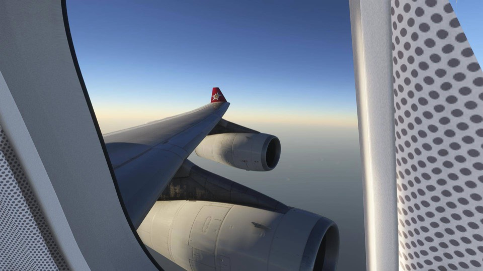
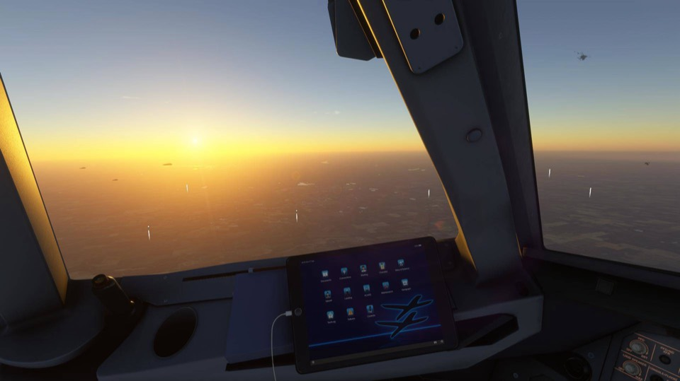

You talk, it listens
Push-to-talk, and Whisper on your PC hears your callsign, runways and taxiways.
Microsoft Flight Simulator 2024 · Windows
Talk to controllers from clearance delivery to the gate, with a first officer beside you on the intercom. Real phraseology, readbacks that are checked, a voice and a manner for every station.
Free forever. Local by default. Bring your own key if you want a cloud model.
Every controller from clearance to the gate, each on their own frequency, in the words real controllers use. Pick a leg, or let it play.
At the gate
Zurich Delivery 121.930
Edelweiss 22, cleared to Palma via the filed departure, climb flight level 80, squawk 1000.
Everything here is in LocalTC today, and free.
ATC
Clearance to the gate, with a person behind every frequency.
Push-to-talk, and Whisper on your PC hears your callsign, runways and taxiways.
Their own voice, manner and habits: calm, friendly, strict, hurried. The same all flight; a new shift after a long break.
Clearance, SIDs and STARs, vectors, approaches, taxi routes from the sim's own taxiways.
"Readback correct." Or "negative, squawk 4512."
Weather, runway in use, cautions, and a new letter when it really changes.
Other flights on the radio, sequencing, go-arounds against the sim's real traffic.
Ask for a runway, a shortcut, the weather. A real answer, or a real "unable".
Mayday and pan-pan, the nearest suitable airport, ATC starting things itself.
The copilot
Someone in the right seat who talks, watches and helps.
Its own key and voice. Talk to it like a person; it remembers the conversation.
V1, rotate, stable at a thousand. Turbulence, wind shear, ice, fuel.
Challenge and response: it reads, you answer, it checks the aircraft.
Lights, gear and flaps on schedule, its altimeter, the after-landing flow.
Readbacks only, or every call. Switch it mid-flight.
Fuel, distance to go, the weather ahead, what ATC just said: answered from the flight itself.

The models
Clever where it helps, checked everywhere it counts.
Whisper, Piper and a local model on your PC. Flights work offline.
Want sharper words? Add a free key for a cloud model. Recommended for quality.
Every number, runway, route and readback is checked against the script.
Without one it runs on the grammar alone: every call understood, every readback checked.

The apps
On your screen, your phone and the web, all at once.
Radios, a live map with ATC zones and traffic, airport lookup, SimBrief.
COM1, COM2 and the copilot on INT, the map, talk with dictation.
Your flight full screen on the web: the map, the radio, the copilot.
Rewatch any flight, share it, and Wrapped: your year in flying.
The ATC, the copilot, your voice and the model all run on your PC. A cloud model is yours to add, with your own free key, when you want better words: then your transmissions go to the provider you picked, and to no one else.
LocalTC itself has no server your flight goes through. The optional account copies your logbook and feeds the phone and the tracker, only if you sign in. Privacy, in plain words.
The good paid ATC add-ons are genuinely good. They also bill you every month, need a live internet connection, and send your voice to somebody else's server. LocalTC trades that for a one-time install.
| What | A typical ATC subscription | |
|---|---|---|
| Price | $0, forever | Usually $10 to $20 a month |
| Works without internet | Yes, that's the point | No, it's a cloud service |
| Where your voice goes | Your CPU or GPU | Uploaded and processed remotely |
| The AI model | On your PC, or the provider you pick, with your own key | Theirs, on their terms |
| Account, login, DRM | None needed | Required |
| If the company folds | Still on your disk, still flies | It stops working |
| Change the phraseology | Edit a text file | File a feature request |
| Read the code | All of it, on GitHub | Closed |
| Usage limits | None, it's your hardware | Often tiered by hours |
If LocalTC saves you that, and you want to say thanks, a coffee is plenty.
Windows, with MSFS 2024. One installer does the lot: Python, LocalTC, Whisper, Piper, Ollama, CUDA if you have an NVIDIA card, and the models sized for your machine. No git, no admin rights.
One setup with everything LocalTC needs to start. No admin rights, nothing else to download first.
It installs to your user folder. When LocalTC opens, its setup guide downloads the models once, picking the light, balanced or quality set from your RAM and graphics card. After that, flights work offline.
The installer isn't code-signed yet, so Windows may say it's from an unknown publisher: More info → Run anyway. LocalTC then updates itself, when you say so, and never mid-flight.
Open LocalTC from the desktop shortcut. Import your SimBrief plan or type one in, press Start, and call for your clearance. Mute the sim's own ATC first: Sound → Character voices → 0.
Prefer git? Clone the repository and double-click Install LocalTC.cmd
(or run install\install.ps1); update with git pull.
It runs on the CPU. Whisper's base.en transcribes a transmission in
about 0.4 s on a laptop CPU, and ATC's voice takes about 0.3 s to synthesise. Without the
language model, LocalTC understands you with its grammar alone.
What works today, and what's still on the way. Nothing here is hidden behind a paywall or a "pro" tier: when it's built, it ships.
LocalTC is built in spare time and given away. There is no nag screen, nor any locked feature. If it made a flight better, that's the whole reward. And if you'd like to buy the coffee to support me, that would be greatly appreciated.